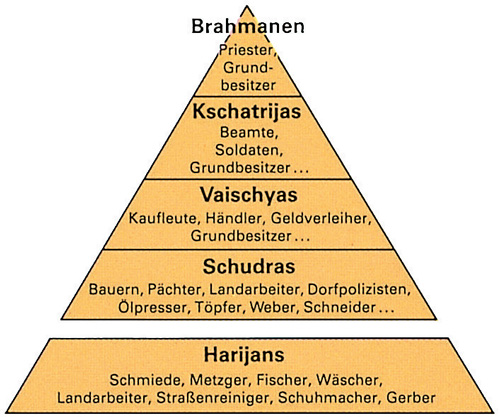

Wichtige Glaubenssätze
- Karma ist ein zentrales Konzept im Hinduismus und beschreibt das Gesetz von Ursache und Wirkung, das die Handlungen eines Menschen und deren Konsequenzen regelt.
- Der Begriff selbst stammt aus dem Sanskrit und bedeutet „Handlung“ oder „Tat“.
- Im Hinduismus besagt das Karma-Gesetz, dass jede Handlung, sei es in Gedanken, Worten oder Taten, eine Reaktion hervorruft. Diese Reaktion kann sowohl im gegenwärtigen Leben als auch in zukünftigen Leben (Wiedergeburten) erfahren werden. Die Auswirkungen von Karma sind daher nicht nur auf das aktuelle Leben begrenzt, sondern wirken sich auf den gesamten Kreislauf von Geburt, Tod und Wiedergeburt aus
Karma
Weltbild
- Hinduismus sieht das Leben als einen Zyklus von Wiedergeburten, in dem Karma die Richtung vorgibt. Das Ziel ist, durch gute Taten (=gutes Karma) und spirituelles Wachstum den Zyklus zu durchbrechen.
Das Kastenwesen
 Das Kastenwesen im Hinduismus ist ein System, das die Gesellschaft in verschiedene Gruppen (Kasten) unterteilt. Jede Kaste hat bestimmte Aufgaben und Rollen im Leben. Es gibt vier Hauptkasten:Das Kastenwesen basiert auf alten religiösen Schriften und soll den sozialen Frieden sichern, wird aber heute zunehmend kritisiert und ist in Indien offiziell illegal.